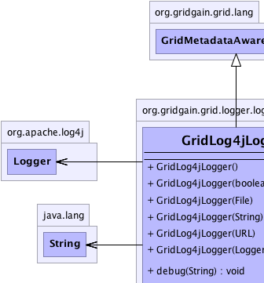
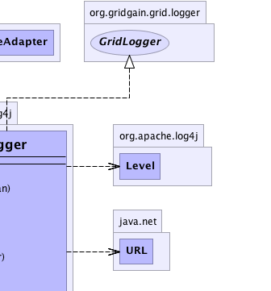
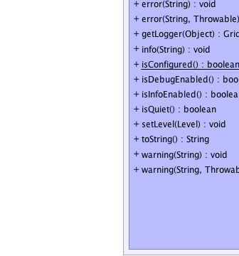
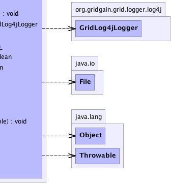

org.gridgain.grid.lang.GridMetadataAwareAdapter
org.gridgain.grid.logger.log4j.GridLog4jLogger
org.gridgain.grid.lang.GridMetadataAwareAdapter
org.gridgain.grid.logger.log4j.GridLog4jLogger
|
GridGain™ 3.6.0c
Community Edition |
|||||||||
| PREV CLASS NEXT CLASS | FRAMES NO FRAMES | |||||||||
| SUMMARY: NESTED | FIELD | CONSTR | METHOD | DETAIL: FIELD | CONSTR | METHOD | |||||||||
java.lang.Object
public class GridLog4jLogger
Log4j-based implementation for logging. This logger should be used by loaders that have prefer log4j-based logging.
Here is a typical example of configuring log4j logger in GridGain configuration file:
<property name="gridLogger">
<bean class="org.gridgain.grid.logger.log4j.GridLog4jLogger">
<constructor-arg type="java.lang.String" value="config/default-log4j.xml"/>
</bean>
</property>
and from your code:
GridConfiguration cfg = new GridConfigurationAdapter();
...
URL xml = U.resolveGridGainUrl("modules/tests/config/log4j-test.xml");
GridLogger log = new GridLog4jLogger(xml);
...
cfg.setGridLogger(log);
Please take a look at GridLoggerResource annotation about logger
injection.
| Wiki | |
| Forum |
|  |  |
|  |  |
| Constructor Summary | |
|---|---|
GridLog4jLogger()
Creates new logger and automatically detects if root logger already has appenders configured. |
|
GridLog4jLogger(boolean init)
Creates new logger. |
|
GridLog4jLogger(File cfgFile)
Creates new logger with given configuration cfgFile. |
|
GridLog4jLogger(org.apache.log4j.Logger impl)
Creates new logger with given implementation. |
|
GridLog4jLogger(String path)
Creates new logger with given configuration path. |
|
GridLog4jLogger(URL cfgUrl)
Creates new logger with given configuration cfgUrl. |
|
| Method Summary | |
|---|---|
void |
debug(String msg)
Logs out debug message. |
void |
error(String msg)
Logs out error message. |
void |
error(String msg,
Throwable e)
Logs error message with optional exception. |
GridLog4jLogger |
getLogger(Object ctgr)
Gets GridLogger wrapper around log4j logger for the given
category. |
void |
info(String msg)
Logs out information message. |
static boolean |
isConfigured()
Checks if Log4j is already configured within this VM or not. |
boolean |
isDebugEnabled()
Tests whether debug level is enabled. |
boolean |
isInfoEnabled()
Tests whether info level is enabled. |
boolean |
isQuiet()
Tests whether info and debug levels are turned off. |
void |
setLevel(org.apache.log4j.Level level)
Sets level for internal log4j implementation. |
String |
toString()
|
void |
warning(String msg)
Logs out warning message. |
void |
warning(String msg,
Throwable e)
Logs out warning message with optional exception. |
| Methods inherited from class org.gridgain.grid.lang.GridMetadataAwareAdapter |
|---|
addMeta, addMetaIfAbsent, addMetaIfAbsent, allMeta, clone, copyMeta, copyMeta, hasMeta, hasMeta, meta, putMetaIfAbsent, putMetaIfAbsent, readExternalMeta, removeMeta, removeMeta, replaceMeta, writeExternalMeta |
| Methods inherited from class java.lang.Object |
|---|
equals, finalize, getClass, hashCode, notify, notifyAll, wait, wait, wait |
| Methods inherited from interface org.gridgain.grid.GridMetadataAware |
|---|
addMeta, addMetaIfAbsent, addMetaIfAbsent, allMeta, copyMeta, copyMeta, hasMeta, hasMeta, meta, putMetaIfAbsent, putMetaIfAbsent, removeMeta, removeMeta, replaceMeta |
| Constructor Detail |
|---|
public GridLog4jLogger()
GridLog4jLogger(boolean)
with parameter true, otherwise, existing appenders will be used (analogous
to calling GridLog4jLogger(boolean)
with parameter false).
public GridLog4jLogger(boolean init)
true the Log4j
logger will be initialized with default console appender. In this case
the log level will be set to DEBUG if system property
GridSystemProperties.GG_DFLT_LOG4J_DEBUG is present with any non-null
value, otherwise the log level will be set to INFO.
init - If true, then a default console appender with
following pattern layout will be created: %d{ABSOLUTE} %-5p [%c{1}] %m%n.
If false, then no implicit initialization will take place,
and Log4j should be configured prior to calling this
constructor.public GridLog4jLogger(org.apache.log4j.Logger impl)
impl - Log4j implementation to use.
public GridLog4jLogger(String path)
throws GridException
path.
GridException - Thrown in case logger can't be created.path - Path to log4j configuration XML file.
public GridLog4jLogger(File cfgFile)
throws GridException
cfgFile.
GridException - Thrown in case logger can't be created.cfgFile - Log4j configuration XML file.
public GridLog4jLogger(URL cfgUrl)
throws GridException
cfgUrl.
GridException - Thrown in case logger can't be created.cfgUrl - URL for Log4j configuration XML file.| Method Detail |
|---|
public static boolean isConfigured()
True if log4j was already configured, false otherwise.public void setLevel(org.apache.log4j.Level level)
level - Log level to set.public GridLog4jLogger getLogger(Object ctgr)
GridLogger wrapper around log4j logger for the given
category. If category is null, then root logger is returned. If
category is an instance of Class then (Class)ctgr).getName()
is used as category name.
getLogger in interface GridLoggerctgr - Category for new logger.
GridLogger wrapper around log4j logger.public void debug(String msg)
debug in interface GridLoggermsg - Debug message.public void info(String msg)
info in interface GridLoggermsg - Information message.public void warning(String msg)
warning in interface GridLoggermsg - Warning message.
public void warning(String msg,
@Nullable
Throwable e)
warning in interface GridLoggermsg - Warning message.e - Optional exception (can be null).public void error(String msg)
error in interface GridLoggermsg - Error message.
public void error(String msg,
@Nullable
Throwable e)
error in interface GridLoggermsg - Error message.e - Optional exception (can be null).public boolean isDebugEnabled()
debug level is enabled.
isDebugEnabled in interface GridLoggertrue in case when debug level is enabled, false otherwise.public boolean isInfoEnabled()
info level is enabled.
isInfoEnabled in interface GridLoggertrue in case when info level is enabled, false otherwise.public boolean isQuiet()
info and debug levels are turned off.
isQuiet in interface GridLoggerinfo and debug levels are turned off.public String toString()
toString in class Object
|
GridGain™ 3.6.0c
Community Edition |
|||||||||
| PREV CLASS NEXT CLASS | FRAMES NO FRAMES | |||||||||
| SUMMARY: NESTED | FIELD | CONSTR | METHOD | DETAIL: FIELD | CONSTR | METHOD | |||||||||
|
GridGain - Real Time Big Data
|
|

|
|